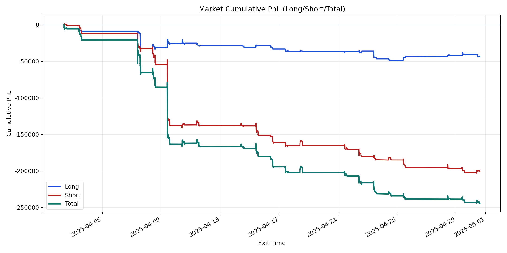
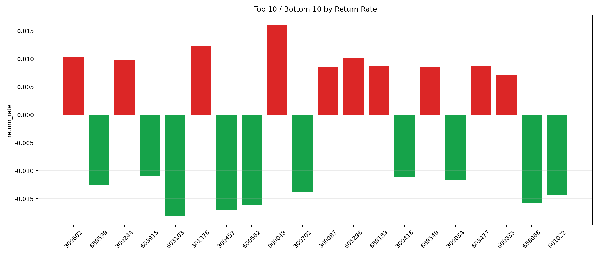

| repo_root | /home/haoranyou/data/output/dynamic_AUM_TAKER_index1000 |
|---|---|
| period_months | 1 |
| period_label | 2025-04-02_to_2025-04-30 |
| start_time | 2025-04-02 09:51:27 |
| end_time | 2025-04-30 14:45:27 |
| n_trades | 9500 |
| n_symbols | 301 |
| total_pnl | -244205.56450000132 |
| long_total_pnl | -43210.13459999928 |
| short_total_pnl | -200995.42990000205 |
| total_entry_notional | 166353451.99999997 |
| long_entry_notional | 60473466.0 |
| short_entry_notional | 105879985.99999999 |
| total_return_rate | -0.001467992167063665 |
| long_return_rate | -0.0007145304785407748 |
| short_return_rate | -0.0018983326074486077 |
| top_symbols_by_return | ["000048", "301376", "300602", "605296", "300244", "688183", "603477", "300087", "688549", "600835"] |
| bottom_symbols_by_return | ["603103", "300457", "600562", "688066", "601022", "300702", "688598", "300034", "300416", "603915"] |

